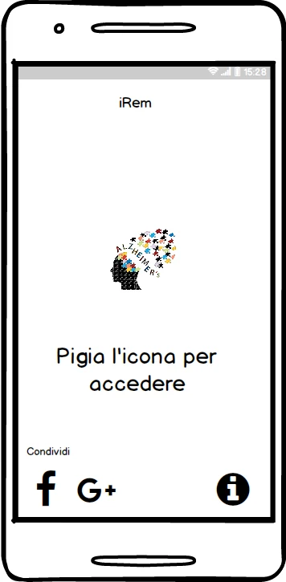

Scenari e requisiti
Studio di utenti, task e personas nel contesto della gestione quotidiana di appuntamenti e ricordi.
Un percorso di progettazione centrata sull’utente. Esplora i mockup autentici e gli schizzi del prototipo per la gestione di eventi e ricordi, realizzato come progetto didattico di gruppo.

La schermata iniziale mette in evidenza due percorsi: gestione degli eventi e raccolta dei ricordi.
Usa i pulsanti, le miniature o i tasti ← → per esplorare tutte le schermate.
Studio di utenti, task e personas nel contesto della gestione quotidiana di appuntamenti e ricordi.
Transizione da bozze su carta a mockup digitali, con scelte di navigazione e feedback visivo.
Cognitive walkthrough, euristiche e testing cooperativo, con iterazioni sul progetto originale.